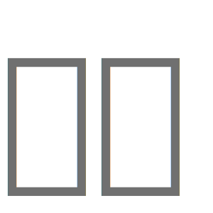
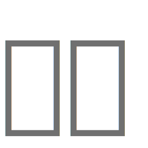
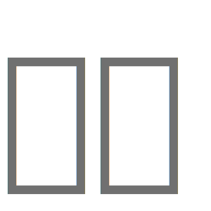

Accéder au site
matthieuberard.fr
×
Accueil
Contact
Vous pouvez télécharger mon CV juste
ici
📃
ici
📃
La version mobile arrive,
il faut patienter
⏳
🌞
🌚
Internet Explorer c'était cool, moins maintenant...
Pour une meilleure expérience d'utilisation,
je vous conseille d'utiliser Chrome
ou Firefox
pour une meilleure expérience d'utilisation 
Oui, encore un site qui utilise des
🍪
Cookie
... Rassurez-vous l'utilisation des cookies sur mon site a pour seul but d'apporter une meilleur expérience de navigation.
On est d'accord ?
On est bof d'accord
On est d'accord
Quel dommage de ne pas autoriser le javascript...
🙍🏻♂️
 ou Firefox
ou Firefox  pour une meilleure expérience d'utilisation 
pour une meilleure expérience d'utilisation 